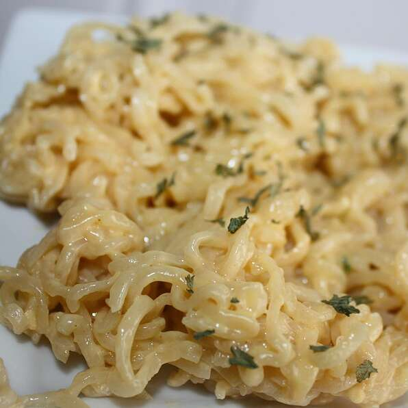

Cheesy Ramen Noodles

This is an extremely simple and delicious spin on the typical ramen noodles that can be EASILY made in the college environment!
Make this when you have some extra money to treat yourself with.
Ingredients
- 2 Cups of water
- 1 package any flavor ramen noodles
- 1 slice american cheese
Steps
- Bring water to a boil in a saucepan. Add ramen noodles and cook 2 minutes until tender. Pour out water, then stir in seasoning packet and cheese to serve.
- Garnish with extra onions for taste.
Home